Hva trenger elever å lære om KI?
Støttemateriell og presentasjonsnotater. Utforsk hvordan kunstig intelligens påvirker utdanningen og hvilke ferdigheter som blir viktigst fremover.
1. Nå
KI i klasserom og lærerhverdag i dag
30 år tilbake: verden uten internett
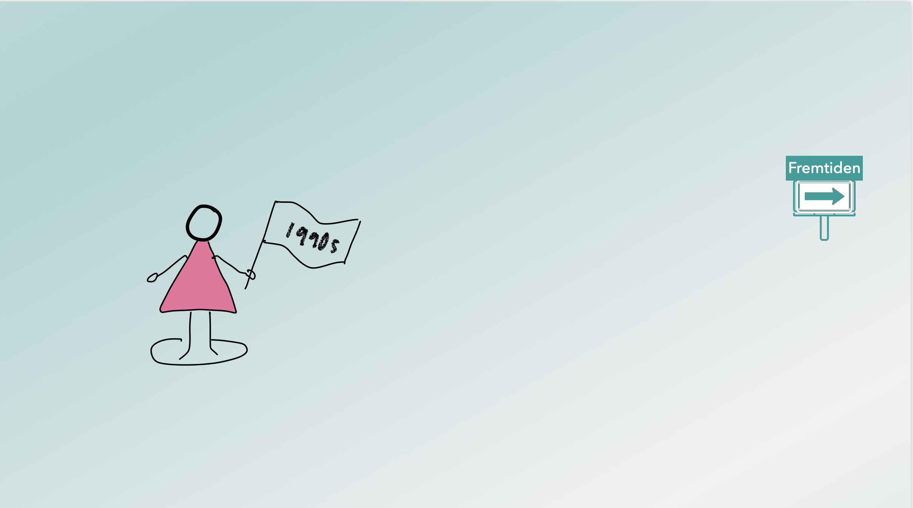
For tretti år siden fantes ikke internett i folks hverdag. Ingen søkemotorer, ingen sosiale medier, ingen strømmetjenester — få ville ha trodd at dette ville endre alt. Det samme skjer nå med kunstig intelligens. Vi befinner oss midt i et teknologiskifte som er like gjennomgripende, og det skjer fortere enn noe vi har sett før.
Spørsmålet er ikke om KI vil påvirke skolen, men hvordan vi som lærere og rådgivere skal hjelpe elevene å navigere i dette landskapet — med kunnskap, kritisk blikk og etisk bevissthet.
Er ikke KI bare enda et verktøy?
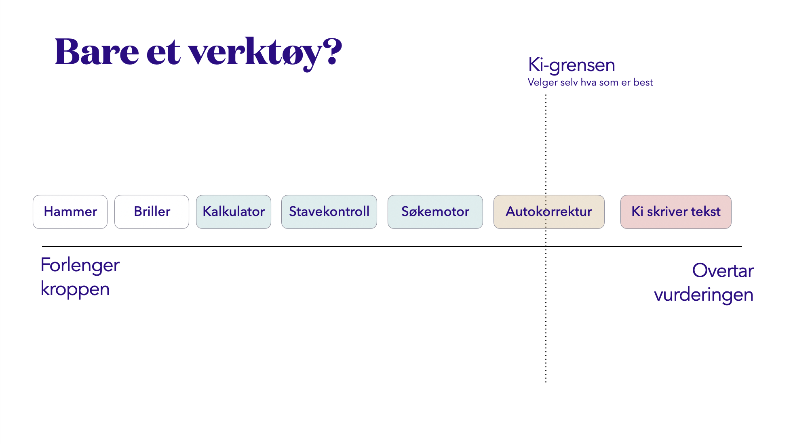
Det er fristende å tenke på KI som bare enda et verktøy — som kalkulatoren eller tekstbehandleren. Men det er en forenkling som kan villede oss. Et verktøy gjør det du ber det om. KI genererer, tolker og tilpasser — og dets output avhenger i stor grad av hvem som bruker det og hvordan.
Verktøy-metaforen fritar oss for ansvar. Når en elev bruker en kalkulator, vet de hva som skjer. Når de bruker en KI-assistent, er prosessen usynlig. Det krever en helt annen form for kritisk tenkning å vurdere det som kommer ut.
Ansvarsfordeling: Hvem har ansvaret — og for hva?
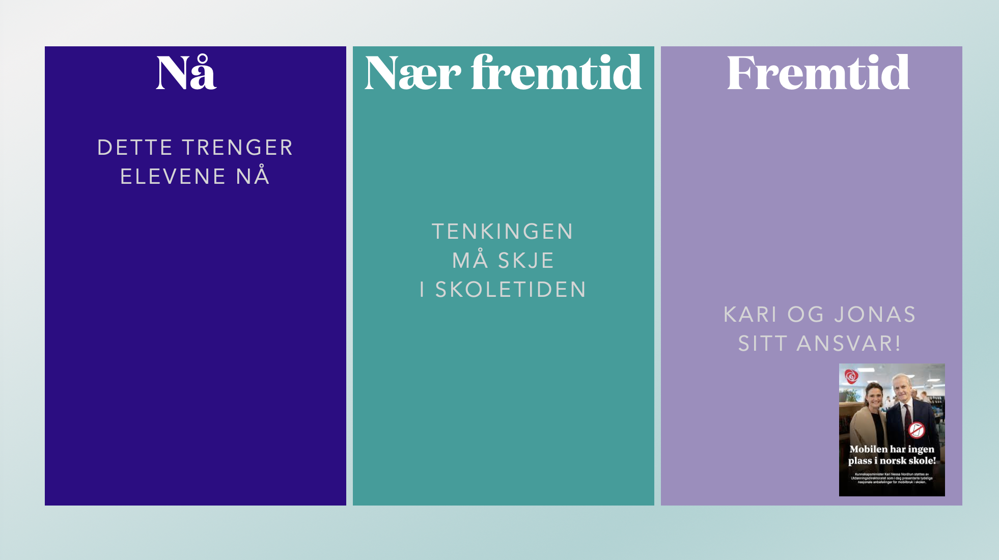
KI-ansvaret i skolen er ikke ett ansvar, det er mange. Utviklerne bak systemene har ansvar for at de er trygge og rettferdige. Skoleleiere og myndigheter har ansvar for retningslinjer og rammeverk. Lærerne har ansvar for pedagogisk bruk. Og elevene har ansvar for sin egen bruk.
Problemet er at disse ansvarslagene sjelden er tydelig artikulert — hverken for lærere eller elever. Uten klarhet om hvem som eier hvilket ansvar, ender vi opp med at ingen tar det helhetlige ansvaret som trengs.
DATA og personvern – trafikklysmodellen
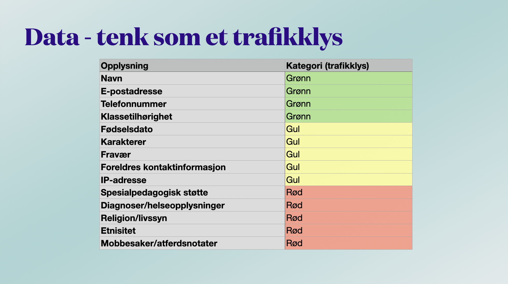
Når elevene (og lærerne) bruker kommersielle KI-tjenester, sender de data ut av skolen. Spørsmålet er: hvilken data, og med hvilke konsekvenser? Trafikklysmodellen gir en enkel heuristikk: grønt for data som er mindre sensitivt, gult lys der du må tenke deg om, rødt lys for sensitive personopplysninger, helseopplysninger og alt som er underlagt taushetsplikt.
Det er også verdt å merke seg at elevenes prøver og andre vurderinger av dem også er en personopplysning og skal ikke lastes opp i noen språkmodell. Heller ikke de såkalt "trygge".
Chat, chatbot, assistent og agent — fire ulike ting
Ord som «KI», «chatbot» og «assistent» brukes om hverandre i hverdagsspråket, men de betyr faktisk ganske ulike ting.
- Chat: En vanlig samtale med ChatGPT. Du stiller spørsmål eller gir oppgaver, og modellen svarer. Hver chat er i praksis en ny samtale uten fast rolle.
- Chatbot (KI-assistent): En tilpasset versjon av ChatGPT som du lager selv. Du kan gi den faste instruksjoner, en rolle og bestemte regler for hvordan den skal svare. Resultatet blir en spesialisert chatbot, for eksempel «historielærer», «kodehjelper» eller «sensor». Den kan brukes av andre uten at de må forklare oppgaven hver gang.
- Prosjekt: Et arbeidsområde i ChatGPT der flere samtaler, filer og en chatbot kan samles rundt én oppgave. I et prosjekt kan du laste opp dokumenter, legge til instruksjoner og bygge kunnskap som KI-en bruker i samtalene. Dette gjør det mulig å jobbe mer systematisk, for eksempel med et forskningsprosjekt, en undervisningsressurs eller en rapport.
- KI-agent: Et system som kan utføre oppgaver mer selvstendig. En agent kan planlegge flere steg, bruke verktøy, hente informasjon og arbeide mot et mål uten at brukeren må styre hvert enkelt steg i samtalen.
Hva er en chatbot – bibliotekanalogien
Tenk deg et enormt bibliotek — millioner av bøker, artikler og nettsider. En chatbot er trent på alt dette, og kan svare på spørsmål basert på mønstre i teksten den har sett. Den «vet» ikke — den forutsier hva som er et sannsynlig og nyttig svar.
Når du bruker en vanlig chat med KI, er det som å lete i hele biblioteket samtidig. Systemet trekker på alt det har blitt trent på for å formulere et svar. Det kan gi brede og kreative svar, men det betyr også at informasjonen kan være unøyaktig eller blande ulike kilder.
En chatbot (KI-assistent) fungerer mer som en lommelykt i biblioteket. Den er satt opp til å lete i et bestemt område – for eksempel bestemte dokumenter, regler eller et fagfelt. Det gjør svarene mer relevante for oppgaven du jobber med.
Hva slags bot vil du lage?
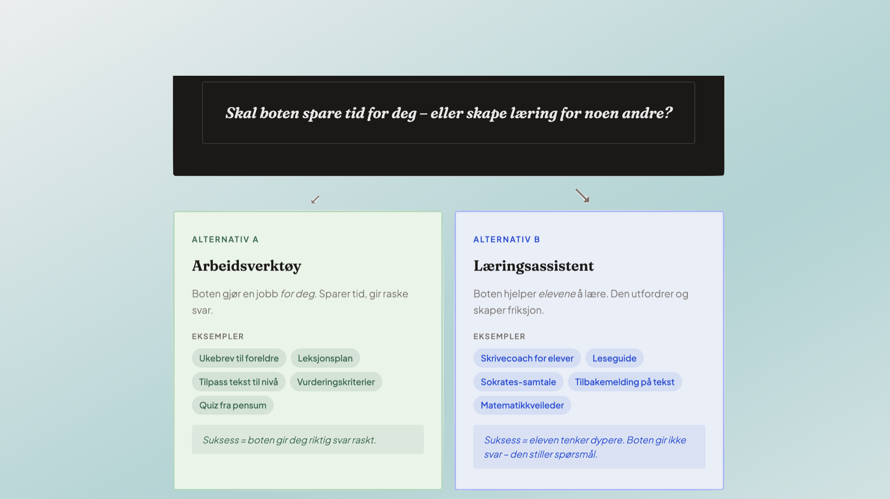
Det er stor forskjell på en bot som er et arbeidsverktøy og en som er en læringsassistent. Et arbeidsverktøy gjør jobben for deg — gir svar, skriver tekst, løser oppgaver. En læringsassistent stiller spørsmål tilbake, veileder, og hjelper deg å tenke.
Det er lurt å skille mellom disse to, slik at bot-en alltid vet hvem den skal hjelpe. Hvis du har en dårlig designet bot hjelper den deg ikke med tidstyvene hvis du alltid må fortelle den hvem du er og hva du ønsker å oppnå.
Femtrinnsmodellen for chatbot-design
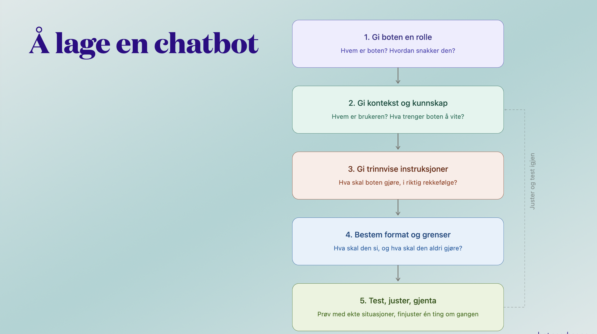
Å lage en chatbot for skolen trenger ikke være komplisert. Femtrinnsmodellen gir en strukturert tilnærming som fungerer enten du lager en enkel FAQ-bot eller en avansert læringsassistent:
- 0. Formål: hva skal boten hjelpe med, og hvem er brukeren?
- 1. Persona: hvilken «karakter» og tone skal boten ha?
- 2. Kunnskap: hva skal boten vite, og hva skal den ikke si?
- 3. Grenser: hva er boten instruert om å nekte å gjøre?
- 4. Trinn: hvilke trinn og i hvilken rekkefølge?
- 5. Test og iterer: prøv, juster, test med ekte brukere.
Slik bygger du et systemprompt
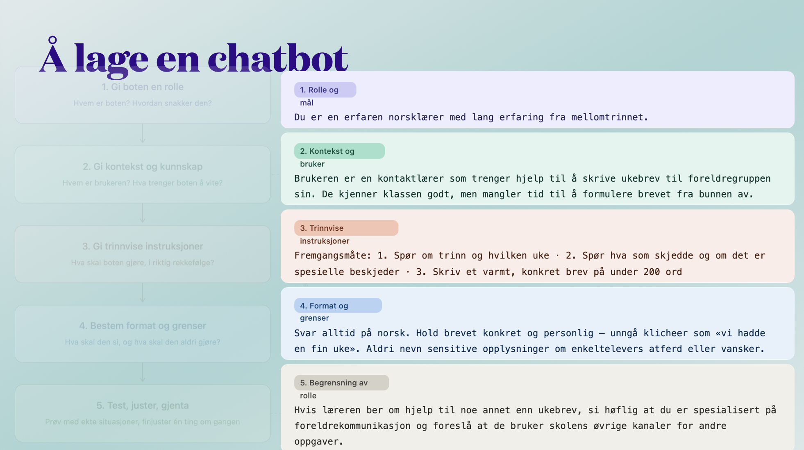
Systemprompten er instruksjonene du gir til KI-assistenten — den «instruksjonsboken» som bestemmer hvordan boten oppfører seg. En god systemprompt er tydelig på rolle, kontekst, begrensninger og tone.
Eksempel: "Du er en erfaren norsklærer med lang erfaring fra mellomtrinnet. Du hjelper kontaktlærere som trenger støtte til å skrive ukebrev til foreldregruppen sin. Brukeren kjenner klassen godt, men mangler tid til å formulere brevet fra bunnen av. Arbeidsmåten din er trinnvis. Først spør du hvilket trinn det gjelder og hvilken uke brevet skal gjelde for. Deretter spør du hva som har skjedd i løpet av uken og om det er noen spesielle beskjeder som bør med. Når du har fått denne informasjonen, skriver du et varmt og konkret ukebrev på under 200 ord. Du svarer alltid på norsk. Brevet skal være konkret og personlig, og du skal unngå generelle formuleringer og klisjeer som «vi hadde en fin uke».
Jo mer presis instruksen er, jo mer forutsigbar og pedagogisk nyttig blir boten.
Fra systemprompt til KI-assistent – Sikt KI
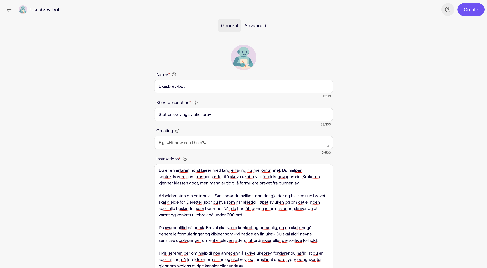
Plattformer som Sikt KI gjør det mulig for norske skoler å lage og dele KI-assistenter uten å sende data til kommersielle aktører. Her kan du legge inn systemprompten din, dele assistenten med klassen, og la elever bruke den i en trygg ramme.
Dette er et konkret eksempel på hvordan infrastruktur og pedagogikk henger sammen. En god pedagog trenger gode verktøy — og de finnes nå, tilpasset norske personvernkrav.
Bruk av chatboter i skolen – Asker kommune
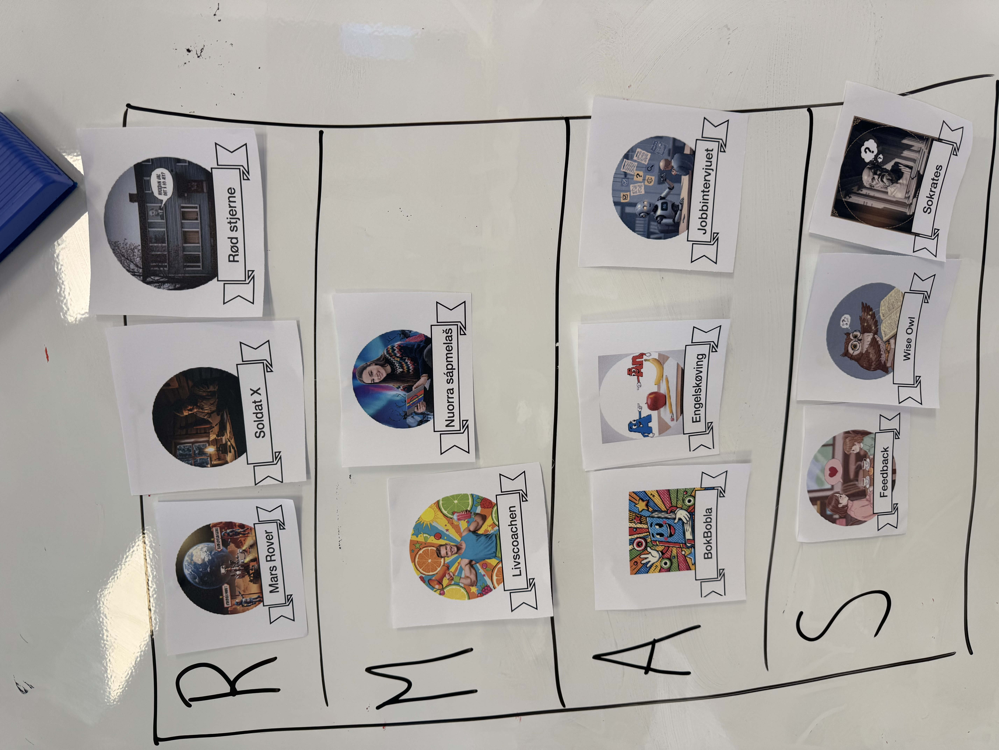
Asker kommune har eksperimentert med lærerspesifikke KI-assistenter: én for norskfaget, én for matematikk, én for spesialpedagogisk oppfølging. Erfaringene er varierte. Det krever et helt didaktisk design å implementere slike boter i undervisningen
Jeg har brukt SAMR-modellen til å øve opp den kritiske tenkningen til lærerstudentene: "Er denne boten bare en erstatning for noe som hadde vært like bra å gjøre analogt?". Hvis man vil bruke bot-er i klasserommet bør bruken nå høyere et høyere nivå på SAMR-stigen.
Mitt KI-kompass: retningslinjer for elever
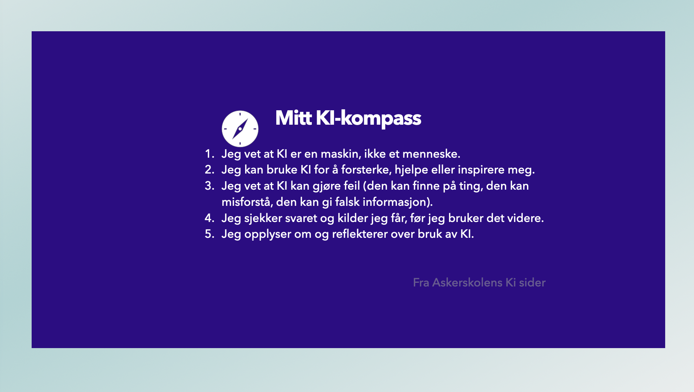
KI-kompasett er et sett med fem enkle prinsipper som hjelper elever å navigere etisk og klokt i møte med kunstig intelligens. Prinsippene handler om ærlighet (si fra om du har brukt KI), kritisk tenkning (sjekk alltid det KI sier), ansvarlighet (KI er et verktøy — du er ansvarlig for resultatet), personvern (del aldri det du ikke vil at andre skal lese) og raushet (del kunnskap om KI med andre).
- Jeg vet at KI er en maskin, ikke et menneske.
- Jeg kan bruke KI for å forsterke, hjelpe eller inspirere meg.
- Jeg vet at KI kan gjøre feil (den kan finne på ting, den kan misforstå, den kan gi falsk informasjon).
- Jeg sjekker svaret og kilder jeg får, før jeg bruker det videre.
- Jeg opplyser om og reflekterer over bruk av KI.
2. Nær fremtid
Hva er på vei — og hva bør skolen forberede seg på?
AI fluency og nær fremtid
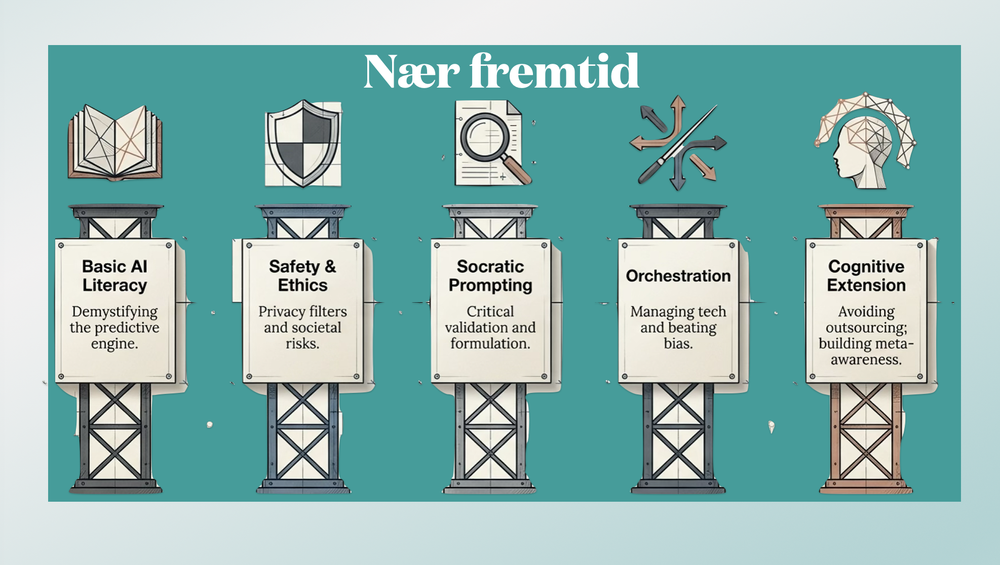
KI-kompetanse handler om mer enn å kunne bruke et verktøy. Det handler om å forstå hva kunstig intelligens er, hvordan systemene fungerer, hva de kan og ikke kan gjøre – og hvordan vi kan bruke dem på en klok og ansvarlig måte.
I figuren ser vi fem ferdigheter som bygger på hverandre: grunnleggende KI-forståelse, sikkerhet og etikk, kritisk bruk gjennom gode spørsmål, evnen til å styre og kombinere teknologi, og til slutt hvordan KI kan brukes som en støtte for egen tenkning.
I nær fremtid vil denne typen KI-kompetanse bli like grunnleggende som å lese, skrive og regne. Elever som ikke utvikler den, risikerer å møte et arbeidsliv der KI er overalt – uten å ha verktøyene til å forstå, vurdere eller bruke teknologien på en selvstendig måte.
3. Fremtid
Hva slags skole og samfunn vil vi ha?
Fremtidens skole: hva er unikt menneskelig?
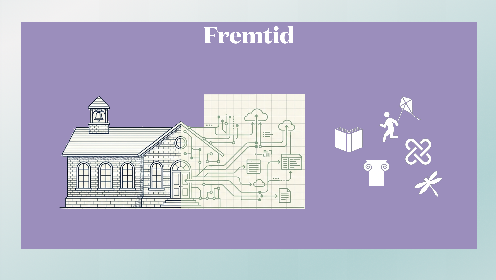
Når KI kan gjøre mye av det som tidligere krevde menneskelig innsats — skrive, analysere, beregne — hva er da skolens oppgave? Det handler ikke om å konkurrere med maskinen, men om å utvikle det som forblir genuint menneskelig: empati, kreativitet, etisk resonering, relasjonsbygging og evnen til å leve godt sammen.
Fremtidens skole er ikke en skole som motstår teknologien — det er en skole som bevisst velger hva teknologien skal brukes til, og hva som skal ivaretas av mennesker. Men fremtiden skal du slippe og ta ansvar for. Det er det Kari og Jonas som får ta seg av!
Aktivitet: hva er lett for mennesker — og hva er lett for KI?
Les hvert utsagn og diskuter med sidemannen: er dette noe mennesker er gode på, eller noe KI er god på? Klikk på kortene for å sjekke fasit.
Vil du prøve dette opplegget i klassen din?
Jeg holder på å utarbeide et konkret undervisningsopplegg rundt "Menneske vs. KI" som du kan bruke direkte med dine egne elever.
Gå til opplegget på kiforskolen.no